Alison Booth
Bolton, Sarah Knowles. Lives of Girls Who Became Famous. New York: T. Y. Crowell, 1886; 1914; 1923; 1925?; 1930; 1936; 1938; 1939; 1941; 1949. Djakarta, Indonesia: Endang, 1958. Trans. in Bengali: Dacca: Purbachal Prakashani, 1959. Trans. in Urdu: Lahore: Maktaba-e-Urdu, 1958.
See How To Make It as a Woman, 57.
TOC: Harriet Beecher Stowe; Helen Hunt Jackson; Lucretia Mott; Mary A. Livermore; Margaret Fuller Ossoli; Maria Mitchell; Louisa M. Alcott; Mary Lyon; Harriet G. Hosmer; Madame de Staêl; Rosa Bonheur; Elizabeth Barrett Browning; "George Eliot"; Elizabeth Fry; Elizabeth Thompson Butler; Florence Nightingale; Lady Brassey; Baroness Burdett-Coutts; Jean Ingelow.
TOC: TOC 1925(?): Elizabeth Barrett Browning; George Eliot; Florence Nightingale; Jean Ingelow; Jenny Lind; Madame de Staêl; Rosa Bonheur; Harriet Beecher Stowe; Helen Hunt Jackson; Lucretia Mott; Mary A. Livermore; Margaret Fuller Ossoli; Maria Mitchell; Louisa M. Alcott; Mary Lyon; Harriet G. Hosmer; Julia Ward Howe; Jane Addams; Alice Freeman Palmer; Clara Barton; Susan B. Anthony; Anna Howard Shaw; Frances E. Willard; Elizabeth Blackwell; Helen Keller; Lady Astor.
TOC: TOC 1941 : Elizabeth Barrett Browning; George Eliot; Florence Nightingale; Jean Ingelow; Jenny Lind; Madame de Staêl; Rosa Bonheur; Harriet Beecher Stowe; Helen Hunt Jackson; Lucretia Mott; Mary A. Livermore; Margaret Fuller Ossoli; Maria Mitchell; Louisa M. Alcott; Mary Lyon; Harriet G. Hosmer; Julia Ward Howe; Jane Addams; Alice Freeman Palmer; Clara Barton; Susan B. Anthony; Anna Howard Shaw; Frances E. Willard; Elizabeth Blackwell; Helen Keller; Lady Astor; Madame Curie; Madame Chiang Kai-Shek; Amelia Earhart.
TOC: TOC 1949 : Jane Addams; Louisa May Alcott; Marian Anderson; Susan B. Anthony; Clara Barton; Elizabeth Blackwell; Rosa Bonheur; Elizabeth Barrett Browning; Katherine Cornell; Marie Curie; Amelia Earhart; Julia Ward Howe; Helen Keller; Elizabeth Kenny; Jenny Lind; Mary Lyon; Florence Nightingale; Margaret Fuller Ossoli; Frances Perkins; Eleanor Roosevelt; Madame de Staêl; Harriet Beecher Stowe.
Copyright Bolton through 1914. Crowell copyright renewed through 1949. See also Pop Chart
-
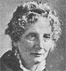Harriet Beecher Stowe
-
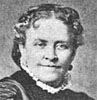Helen Hunt Jackson
-
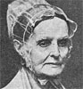Lucretia Mott
-
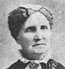Mary A. Livermore
-
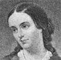Margaret Fuller Ossoli
-
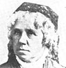Maria Mitchell
-
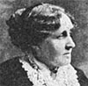Louisa M. Alcott
-
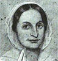Mary Lyon
-
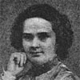Harriet G. Hosmer
-
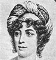Madame de Stael
-
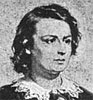Rosa Bonheur
-
Elizabeth Barrett Browning
-
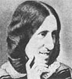George Eliot
-
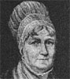Elizabeth Fry
-
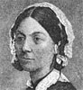Florence Nightingale
-
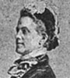Lady Brassey
-
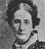Baroness Burdett-Coutts
-
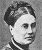Jean Ingelow
Search OCLC WorldCat for this title.
Search Google Books for this title.